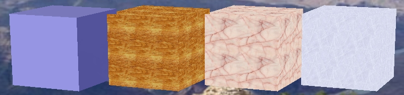

3Dコンピュータグラフィックスにおいて、
3Dオブジェクトの表面に貼り付ける画像のことをテクスチャと呼びます。
テクスチャを利用することにより3Dオブジェクトの質感などを簡単に表現することができます。
下図は前章で作成したボックスにテクスチャを貼ったした例です。
左から順に、テクスチャ無し、木のテクスチャ、ピンクの大理石のテクスチャ、氷のテクスチャです。

テクスチャを利用するためには、まず画像を用意します。
ここではあらかじめ用意された画像(photo01.jpg - photo06.jpg)を利用します。
画像は作成するJARアプリケーションとは別に用意しても構いませんが、
簡単化のために作成するJARアプリケーション内部に取り込むことにします。
前章で作成したボックスにテクスチャを貼ってみます。
まずは 1つの画像をすべての面に表示させてみます。
テクスチャを用いるためにプログラムに以下の変更を行います。
ClassLoader loader = this.getClass().getClassLoader();
url = loader.getResource("image.jpg");
|
/*
* TextureBox.java
*
* Created on 2005/09/29, 15:42
*
* To change this template, choose Tools | Options and locate the template under
* the Source Creation and Management node. Right-click the template and choose
* Open. You can then make changes to the template in the Source Editor.
*/
package texturebox;
/**
*
* @author duke
*/
import java.io.IOException;
import java.net.URL;
import java.lang.ClassLoader;
import javax.vecmath.Vector3f;
import org.jdesktop.lg3d.sg.Appearance;
import org.jdesktop.lg3d.utils.shape.Box;
import org.jdesktop.lg3d.utils.shape.SimpleAppearance;
import org.jdesktop.lg3d.wg.Component3D;
import org.jdesktop.lg3d.wg.Frame3D;
public class TextureBox {
/** Creates a new instance of TextureBox */
public TextureBox(){
// フレームの生成
Frame3D frame = new Frame3D();
// シェイプの生成および設定
// 画像を指定した Appearance の設定
Appearance appearance = null;
URL url = null;
ClassLoader loader = this.getClass().getClassLoader();
// 読み込みに失敗した場合 IOException
// を発生させますので、それに対応するためにException処理を追加
try {
url = loader.getResource("photo01.jpg");
appearance = new SimpleAppearance( url );
} catch (IOException ex) {
System.err.println("画像ファイルの読み込みに失敗しました。");
ex.printStackTrace();
}
// Box の生成
// 引数は、幅(x)、高さ(y)、奥行き(z)、フラグ、アピアランス
// Box.GENERATE_TEXTURE_COORDS は
// Boxオブジェクトでテクスチャを利用するために必要なフラグです
Box box = new Box(0.10f, 0.08f, 0.06f, Box.GENERATE_TEXTURE_COORDS, appearance);
// コンポーネントの生成
Component3D component = new Component3D();
// シェイプをコンポーネントに追加
component.addChild(box);
// コンポーネントをコンテナに追加
// ここではコンテナを使用していないので、
// 直接フレームに追加
frame.addChild(component);
// フレームの表示
// フレームの大きさを設定
frame.setPreferredSize(new Vector3f(0.1f, 0.08f, 0.06f));
// フレームの表示
frame.changeEnabled(true);
frame.changeVisible(true);
}
/**
* @param args the command line arguments
*/
public static void main(String[] args) {
// TODO code application logic here
new TextureBox();
}
}
|
/*
* TextureBox.java
*
* Created on 2005/09/29, 15:42
*
* To change this template, choose Tools | Options and locate the template under
* the Source Creation and Management node. Right-click the template and choose
* Open. You can then make changes to the template in the Source Editor.
*/
package texturebox;
/**
*
* @author duke
*/
import java.io.IOException;
import java.net.URL;
import java.lang.ClassLoader;
import javax.vecmath.Vector3f;
import org.jdesktop.lg3d.sg.Appearance;
import org.jdesktop.lg3d.sg.Shape3D;
import org.jdesktop.lg3d.utils.shape.Box;
import org.jdesktop.lg3d.utils.shape.SimpleAppearance;
import org.jdesktop.lg3d.wg.Component3D;
import org.jdesktop.lg3d.wg.Frame3D;
public class TextureBox {
/** Creates a new instance of TextureBox */
public TextureBox() {
// フレームの生成
Frame3D frame = new Frame3D();
// シェイプの生成および設定
// ボックス６面の画像を指定した Appearance の設定
Appearance appearanceFront = null;
Appearance appearanceRight = null;
Appearance appearanceLeft = null;
Appearance appearanceTop = null;
Appearance appearanceBottom = null;
Appearance appearanceBack = null;
URL url = null;
ClassLoader loader = this.getClass().getClassLoader();
// SimpleAppearance オブジェクトを作成する際に、
// テクスチャファイルの読み込みに失敗した場合 IOException
// を発生させますので、それに対応するためにException処理を追加
try {
url = loader.getResource("photo01.jpg");
appearanceFront = new SimpleAppearance( url );
url = loader.getResource("photo02.jpg");
appearanceRight = new SimpleAppearance( url );
url = loader.getResource("photo03.jpg");
appearanceLeft = new SimpleAppearance( url );
url = loader.getResource("photo04.jpg");
appearanceTop = new SimpleAppearance( url );
url = loader.getResource("photo05.jpg");
appearanceBottom = new SimpleAppearance( url );
url = loader.getResource("photo06.jpg");
appearanceBack = new SimpleAppearance( url );
} catch (IOException ex) {
System.err.println("画像ファイルの読み込みに失敗しました。");
ex.printStackTrace();
}
// Box の生成
// 引数は、幅(x)、高さ(y)、奥行き(z)、フラグ、アピアランス
// Box.GENERATE_TEXTURE_COORDS は
// Boxオブジェクトで テクスチャを利用するために必要なフラグです
// 6面の Appearance を貼り付けるため、とりあえず Box の Appearance を null にします。
Box box = new Box(0.10f, 0.08f, 0.06f, Box.GENERATE_TEXTURE_COORDS, null);
// 正面
Shape3D shape = box.getShape(Box.FRONT);
shape.setAppearance(appearanceFront);
// 右側
shape = box.getShape(Box.RIGHT);
shape.setAppearance(appearanceRight);
// 左側
shape = box.getShape(Box.LEFT);
shape.setAppearance(appearanceLeft);
// 上
shape = box.getShape(Box.TOP);
shape.setAppearance(appearanceTop);
// 下(底面)
shape = box.getShape(Box.BOTTOM);
shape.setAppearance(appearanceBottom);
// 後
shape = box.getShape(Box.BACK);
shape.setAppearance(appearanceBack);
// コンポーネントの生成
Component3D component = new Component3D();
// シェイプをコンポーネントに追加
component.addChild(box);
// コンポーネントをコンテナに追加
// ここではコンテナを使用していないので、
// 直接フレームに追加
frame.addChild(component);
// フレームの表示
// フレームの大きさを設定
frame.setPreferredSize(new Vector3f(0.1f, 0.08f, 0.06f));
// フレームの表示
frame.changeEnabled(true);
frame.changeVisible(true);
}
/**
* @param args the command line arguments
*/
public static void main(String[] args) {
// TODO code application logic here
new TextureBox();
}
}
|